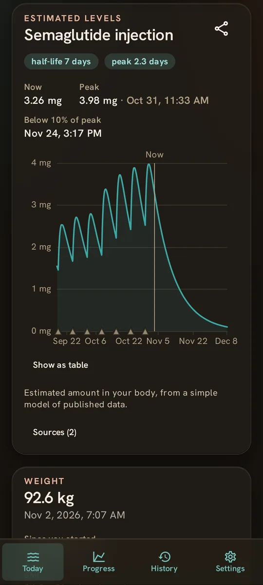
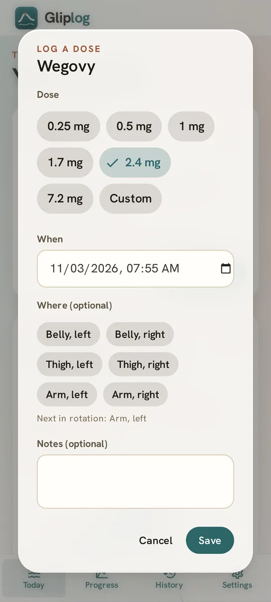
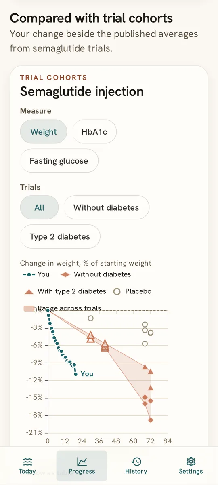

Estimated levels
Estimate what's in your body between doses, from published half-lives.

Track doses, weight, side effects, and estimated levels. No paywalls. No subscriptions. Ever.
Works with brand-name pens, tablets, and compounded vials.


Many apps charge for all of this. We don't.
Gliplog
Everything included
Total$0.00
Renews: never
Estimate what's in your body between doses, from published half-lives.

Label strengths. A countdown to your next dose. Syringe units for compounded vials.

Your trend, with doses and levels on the same chart.
Your progress beside STEP, SURMOUNT, and SURPASS. For weight, HbA1c, and fasting glucose.

Log what you feel. See what comes up most, and when.
HbA1c and glucose, in your lab's units.
A PDF for your care team. 30 days, 90 days, or everything.
A notification when a dose is due. Or put it on your calendar.
Only you see them. Compare side by side.
Every number links to its source.
The journal we wanted. Now it's yours.
Not our server. Not our cloud.
Your device holds the only copy. Back it up in Settings.
Brand-name pens and tablets, compounded vials, or any other medicine you add by name.
Starting doses, step-ups, and what to do about a missed dose for Wegovy, Ozempic, Rybelsus, Zepbound, Mounjaro, Saxenda, and Foundayo, as printed in each US label.
Brand names are the trademarks of their respective owners and are used only to identify the medicines. Gliplog is not affiliated with, endorsed by, or sponsored by Novo Nordisk, Eli Lilly, or any other manufacturer or pharmacy.
Using research peptides? Try PepCalc, a free, private, offline calculator for reconstituting a vial and reading the draw on your syringe.
Open gliplog.com/app on your phone, then add it to your Home Screen. It opens full screen and works offline.
| Phone or tablet | Steps |
|---|---|
| iPhone or iPad, Safari | Share, then Add to Home Screen |
| iPhone or iPad, Chrome | Share (in the address bar), then Add to Home Screen |
| Android, Chrome or Edge | Menu, then Install app (or Add to Home screen) |
| Android, Firefox | Menu, then Add app to Home screen |
An Android app for Google Play and F-Droid is coming, built from the same open source code.
Yes. Forever. No paywall, no upsell, no subscription, no ads. With no server, it costs almost nothing to run.
On your device: in your browser's storage, or inside the Android app. Nothing is sent anywhere. Clearing this site's data or uninstalling the app deletes it. Keep a backup.
Save a backup in Settings, move the file to the new phone, and restore it there. On iPhone, Safari and the home-screen app keep separate data. Use a backup to move between them.
Yes. On the Progress screen, export a PDF report of your medicines, weight, blood sugar, side effects, and doses for the last 30 days, the last 90 days, or everything, with charts of your trends, estimated levels and trial comparisons.
Gliplog is built around labelled medicines and compounded vials. For research peptides, try PepCalc: it works out how much water to add to a vial and how far to draw the syringe.
No. It shows the strengths and schedules printed on each medicine's label for reference, and does the arithmetic. Your prescriber decides your dose. The dosing schedules page sets out each label's schedule.
Only about 1% to 2% of a semaglutide tablet is absorbed, and the amount varies from day to day. An estimate would be misleading.
No. Gliplog is a journal and a calculator, not a medical device.